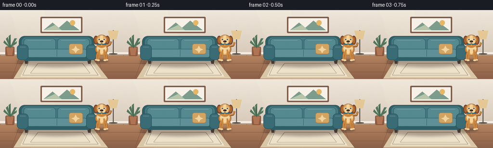
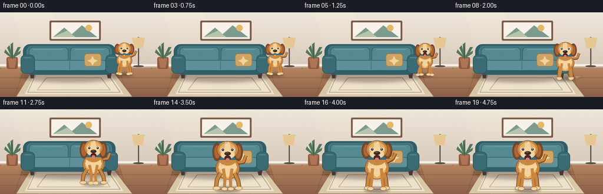
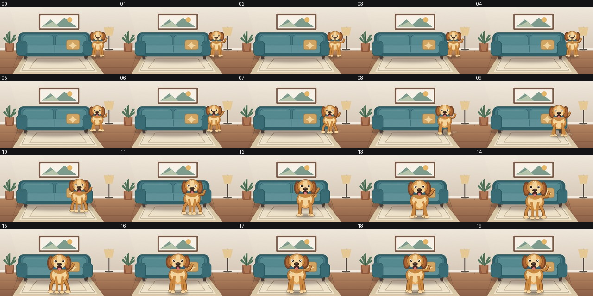

CODING AGENTS AS PIXEL WORLD MODELS
traex/GPT-5.6-Sol · dynamic_spatial_relationship_0003
点击播放 · 原生 RGB 像素
逐轮保存的候选
回放视频、检查图与代码变化。
每份候选均可单独播放。实际图片检查记录在下方工具轨迹中。
候选 01播放与检查图
点击播放 · 原生 RGB 像素


展开代码变化
--- 上一保存版本
+++ 本次保存版本
@@ -0,0 +1,238 @@
+from pathlib import Path
+import json, math
+import numpy as np
+from PIL import Image, ImageDraw, ImageFilter
+import artifact_io
+
+CASE_DIR = Path(__file__).resolve().parent
+SPEC = json.loads((CASE_DIR / 'task_spec.json').read_text())
+W, H, N = SPEC['width'], SPEC['height'], SPEC['frames']
+SS = 4
+SW, SH = W*SS, H*SS
+rng = np.random.default_rng(7)
+
+def C(hexstr):
+ hexstr = hexstr.lstrip('#')
+ return tuple(int(hexstr[i:i+2], 16) for i in (0,2,4))
+
+def scbox(b): return tuple(int(round(v*SS)) for v in b)
+def scpts(p): return [(int(round(x*SS)), int(round(y*SS))) for x,y in p]
+
+def rounded(draw, box, radius, fill, outline=None, width=1):
+ draw.rounded_rectangle(scbox(box), radius=int(radius*SS), fill=fill,
+ outline=outline, width=max(1,int(width*SS)))
+
+def ellipse(draw, box, fill, outline=None, width=1):
+ draw.ellipse(scbox(box), fill=fill, outline=outline, width=max(1,int(width*SS)))
+
+def line(draw, points, fill, width=1, joint='curve'):
+ draw.line(scpts(points), fill=fill, width=max(1,int(width*SS)), joint=joint)
+
+def polygon(draw, points, fill): draw.polygon(scpts(points), fill=fill)
+
+# Static room at high resolution.
+def make_room():
+ arr = np.zeros((SH, SW, 3), dtype=np.uint8)
+ # Warm wall gradient and wood floor gradient.
+ top = np.array(C('#efe7db')); bot = np.array(C('#d9cbbb'))
+ for y in range(int(91*SS)):
+ t = y/(91*SS)
+ arr[y,:,:] = np.clip(top*(1-t)+bot*t,0,255)
+ ftop = np.array(C('#b88761')); fbot = np.array(C('#8b6048'))
+ for y in range(int(91*SS), SH):
+ t = (y/SS-91)/(H-91)
+ arr[y,:,:] = np.clip(ftop*(1-t)+fbot*t,0,255)
+ im = Image.fromarray(arr, 'RGB')
+ d = ImageDraw.Draw(im)
+ # Soft window light wash.
+ light = Image.new('RGBA',(SW,SH),(0,0,0,0)); ld=ImageDraw.Draw(light)
+ ld.polygon(scpts([(20,0),(90,0),(155,144),(65,144)]), fill=(255,250,226,22))
+ im = Image.alpha_composite(im.convert('RGBA'), light)
+ d = ImageDraw.Draw(im)
+ # Baseboard.
+ d.rectangle(scbox((0,88,256,93)), fill=C('#f5eee4')+(255,))
+ d.rectangle(scbox((0,92,256,94)), fill=C('#bca894')+(255,))
+ # Fine floor board seams and subtle highlights.
+ for x0, x1 in [(-25,24),(24,70),(70,119),(119,169),(169,217),(217,275)]:
+ line(d, [(x0,144),(x0+(128-x0)*.17,94)], C('#75503e')+(65,), .55)
+ for y in [111,129]: line(d, [(0,y),(256,y)], C('#76503d')+(55,), .55)
+ # Rug, trapezoidal to reinforce depth.
+ polygon(d, [(55,99),(190,99),(224,143),(28,143)], C('#d8c8a8')+(255,))
+ polygon(d, [(61,102),(185,102),(210,139),(42,139)], C('#eee2cb')+(255,))
+ # Rug geometric border.
+ line(d, [(61,105),(183,105),(204,136),(47,136),(61,105)], C('#a99c80')+(180,), 1)
+ line(d, [(79,111),(171,111),(187,132),(63,132),(79,111)], C('#c0ad8d')+(150,), 1)
+ # Wall art.
+ rounded(d,(84,14,171,48),2,C('#7b5c48')+(255,))
+ rounded(d,(87,17,168,45),1,C('#f7f1e8')+(255,))
+ polygon(d,[(90,42),(109,26),(122,37),(139,22),(165,42)],C('#7d9c8d')+(255,))
+ polygon(d,[(90,42),(114,31),(128,42)],C('#b6c5aa')+(255,))
+ ellipse(d,(145,21,156,32),C('#e7b768')+(255,))
+ # Plant on left.
+ rounded(d,(11,76,30,96),3,C('#8f5a3e')+(255,))
+ polygon(d,[(13,78),(28,78),(25,94),(16,94)],C('#ae7655')+(255,))
+ for pts in [[(20,78),(12,60),(16,56),(21,75)],[(21,77),(30,59),(35,59),(24,78)],
+ [(19,77),(18,54),(22,51),(22,76)],[(17,76),(7,68),(9,63),(20,76)],
+ [(23,77),(34,70),(35,65),(21,74)]]:
+ polygon(d,pts,C('#53765d')+(255,))
+ line(d,[(21,79),(20,58)],C('#375641')+(255,),1)
+ # Small floor lamp on far right, behind starting dog.
+ line(d,[(235,42),(235,92)],C('#5a514b')+(255,),2)
+ polygon(d,[(224,43),(246,43),(242,61),(228,61)],C('#e5c893')+(255,))
+ ellipse(d,(226,90,244,93),C('#5a514b')+(255,))
+ # Sofa shadow.
+ sh=Image.new('RGBA',(SW,SH),(0,0,0,0)); sd=ImageDraw.Draw(sh)
+ sd.ellipse(scbox((35,96,204,119)),fill=(55,31,26,90))
+ sh=sh.filter(ImageFilter.GaussianBlur(3*SS))
+ im=Image.alpha_composite(im,sh); d=ImageDraw.Draw(im)
+ # Sofa legs.
+ polygon(d,[(50,100),(60,100),(57,112),(52,112)],C('#493a34')+(255,))
+ polygon(d,[(180,100),(190,100),(188,112),(183,112)],C('#493a34')+(255,))
+ # Back silhouette.
+ rounded(d,(39,54,196,101),12,C('#315f67')+(255,))
+ rounded(d,(45,57,190,96),9,C('#487983')+(255,))
+ # Back cushions.
+ rounded(d,(49,59,116,88),7,C('#568a91')+(255,),C('#2e626a')+(255,),1)
+ rounded(d,(119,59,186,88),7,C('#568a91')+(255,),C('#2e626a')+(255,),1)
+ # Cushion soft highlights.
+ line(d,[(57,63),(106,63)],C('#7aa2a4')+(135,),1)
+ line(d,[(127,63),(177,63)],C('#7aa2a4')+(135,),1)
+ # Seat base and cushion.
+ rounded(d,(47,82,188,106),7,C('#315f67')+(255,))
+ rounded(d,(55,81,181,99),6,C('#609198')+(255,),C('#2e626a')+(255,),1)
+ line(d,[(118,83),(118,97)],C('#356c73')+(210,),1)
+ # Arms, strongly defined.
+ rounded(d,(35,72,59,104),8,C('#396c75')+(255,),C('#2a565e')+(255,),1)
+ rounded(d,(179,72,200,104),8,C('#396c75')+(255,),C('#2a565e')+(255,),1)
+ line(d,[(41,77),(53,77)],C('#6e969b')+(150,),1)
+ line(d,[(184,77),(195,77)],C('#6e969b')+(150,),1)
+ # Throw pillow.
+ rounded(d,(143,70,172,92),5,C('#d2a562')+(255,),C('#af7c43')+(255,),1)
+ polygon(d,[(157,74),(160,80),(166,82),(160,85),(157,90),(154,85),(148,82),(154,80)],C('#f1d5a0')+(210,))
+ # Stable, extremely subtle paper-like grain.
+ rgb=np.asarray(im.convert('RGB')).astype(np.int16)
+ grain=rng.normal(0,0.65,rgb.shape[:2])[:,:,None]
+ rgb=np.clip(rgb+grain,0,255).astype(np.uint8)
+ return Image.fromarray(rgb,'RGB')
+
+ROOM=make_room()
+
+def draw_dust(base, cx, gy, amount, frame):
+ if amount <= 0: return base
+ lay=Image.new('RGBA',(SW,SH),(0,0,0,0)); d=ImageDraw.Draw(lay)
+ # Dust trails stay behind the running dog.
+ for k in range(4):
+ ang = (k-1.5)*0.55
+ drift = (5+k*3)*amount
+ x = cx + 14 + drift
+ y = gy - 2 - abs(math.sin(frame*.7+k))*3
+ r=(2.8-k*.35)*amount
+ if r>0.3: ellipse(d,(x-r,y-r,x+r,y+r),(230,211,178,int(95*amount)))
+ lay=lay.filter(ImageFilter.GaussianBlur(1.0*SS))
+ return Image.alpha_composite(base.convert('RGBA'),lay)
+
+def draw_dog(base, cx, ground, scale, phase, moving, progress):
+ # Soft contact shadow.
+ shadow=Image.new('RGBA',(SW,SH),(0,0,0,0)); sd=ImageDraw.Draw(shadow)
+ ellipse(sd,(cx-20*scale,ground-4*scale,cx+20*scale,ground+4*scale),(35,25,22,105))
+ shadow=shadow.filter(ImageFilter.GaussianBlur(2.2*SS))
+ im=Image.alpha_composite(base.convert('RGBA'),shadow)
+ lay=Image.new('RGBA',(SW,SH),(0,0,0,0)); d=ImageDraw.Draw(lay)
+ bob = (1.5*abs(math.sin(phase))) if moving else 0
+ gy = ground + bob*scale
+ def P(x,y): return (cx+x*scale, gy+y*scale)
+ def B(x0,y0,x1,y1):
+ a=P(x0,y0); b=P(x1,y1); return (a[0],a[1],b[0],b[1])
+ def E(b,fill,outline=None,w=1): ellipse(d,B(*b),fill,outline,w*scale)
+ def R(b,r,fill,outline=None,w=1): rounded(d,B(*b),r*scale,fill,outline,w*scale)
+ def L(pts,fill,w): line(d,[P(*q) for q in pts],fill,w*scale)
+ def Q(pts,fill): polygon(d,[P(*q) for q in pts],fill)
+ gold=C('#c9873f')+(255,); light=C('#e7ad62')+(255,); cream=C('#f3d49c')+(255,)
+ dark=C('#7d4828')+(255,); deep=C('#3a2923')+(255,)
+ # Tail behind body, wagging more after arrival.
+ wag=math.sin(phase*1.25)*5
+ L([(14,-43),(25,-49+wag),(29,-58+wag*.7)],dark,6)
+ L([(14,-44),(25,-50+wag),(29,-58+wag*.7)],gold,4)
+ # Hind body.
+ E((-19,-52,19,-17),gold,dark,.8)
+ E((-14,-48,14,-18),light)
+ # Running legs alternate; settle into symmetric stance at the end.
+ swing = math.sin(phase)
+ if not moving: swing=0
+ left_y = -17 + max(0,swing)*4
+ right_y = -17 + max(0,-swing)*4
+ # rear legs
+ L([(-11,-27),(-14+4*swing,left_y),(-15+5*swing,-3)],dark,7)
+ L([(11,-27),(14-4*swing,right_y),(15-5*swing,-3)],dark,7)
+ L([(-11,-27),(-14+4*swing,left_y),(-15+5*swing,-3)],gold,5)
+ L([(11,-27),(14-4*swing,right_y),(15-5*swing,-3)],gold,5)
+ E((-20+5*swing,-6,-8+5*swing,0),cream,dark,.6)
+ E((8-5*swing,-6,20-5*swing,0),cream,dark,.6)
+ # Cream chest ruff.
+ Q([(-11,-48),(-15,-36),(-9,-27),(0,-20),(9,-27),(15,-36),(10,-49),(0,-44)],cream)
+ # Forelegs, opposite gait.
+ L([(-7,-34),(-8-5*swing,-18),(-10-7*swing,-2)],gold,5)
+ L([(7,-34),(8+5*swing,-18),(10+7*swing,-2)],gold,5)
+ E((-15-7*swing,-5,-5-7*swing,1),cream,dark,.5)
+ E((5+7*swing,-5,15+7*swing,1),cream,dark,.5)
+ # Neck and collar.
+ E((-14,-59,14,-39),gold)
+ R((-15,-53,15,-48),2,C('#346e8b')+(255,),C('#244d65')+(255,),.7)
+ E((-2,-49,2,-45),C('#e9bc4f')+(255,),C('#765625')+(255,),.5)
+ # Ears behind head, with mild running flap.
+ flap=(abs(math.sin(phase))*4 if moving else math.sin(phase)*1.2)
+ E((-24,-75,-10,-49+flap),dark,C('#61391f')+(255,),.8)
+ E((10,-75,24,-49+flap),dark,C('#61391f')+(255,),.8)
+ E((-21,-71,-12,-53+flap),C('#ad6634')+(255,))
+ E((12,-71,21,-53+flap),C('#ad6634')+(255,))
+ # Head and crown.
+ E((-17,-78,17,-50),gold,dark,.9)
+ E((-13,-75,13,-53),light)
+ # Forehead blaze and eyebrows.
+ Q([(-4,-76),(3,-76),(6,-60),(0,-55),(-6,-61)],cream)
+ E((-11,-67,-5,-61),C('#ffffff')+(220,))
+ E((5,-67,11,-61),C('#ffffff')+(220,))
+ E((-9.5,-66,-5.5,-62),deep)
+ E((5.5,-66,9.5,-62),deep)
+ E((-8.2,-65.2,-7,-64),C('#fff8df')+(255,))
+ E((6.8,-65.2,8,-64),C('#fff8df')+(255,))
+ # Muzzle cheeks and nose.
+ E((-11,-62,1,-51),cream)
+ E((-1,-62,11,-51),cream)
+ E((-5,-61,5,-55),deep)
+ E((-3.5,-60.5,2,-58.3),C('#5e4840')+(255,))
+ # Happy open mouth/tongue while running.
+ if moving or progress>.88:
+ E((-5,-55,5,-47),C('#482825')+(255,))
+ E((-3,-51,3,-46),C('#db7778')+(255,))
+ else:
+ L([(-3,-53),(0,-51),(3,-53)],deep,1)
+ # Fur highlight tufts.
+ L([(-12,-73),(-7,-76),(-3,-74),(1,-77),(6,-74)],C('#f0be78')+(190,),1)
+ L([(-14,-42),(-9,-39),(-5,-41)],C('#f7deb0')+(190,),1)
+ return Image.alpha_composite(im,lay)
+
+def smoothstep(t):
+ t=max(0,min(1,t)); return t*t*(3-2*t)
+
+frames=[]
+for i in range(N):
+ if i <= 4: raw=0.0
+ elif i <= 15: raw=(i-4)/11
+ else: raw=1.0
+ u=smoothstep(raw)
+ # A gentle inward curve, from right of sofa into the foreground center.
+ cx=(211*(1-u)+128*u) + 7*math.sin(math.pi*u)
+ ground=106*(1-u)+137*u - 2*math.sin(math.pi*u)
+ scale=.70*(1-u)+1.08*u
+ moving=(i>4 and i<16)
+ phase=(i-4)*1.65 if moving else (i*0.55 if i<=4 else (i-16)*.7)
+ # Dust only mid-run.
+ amt=(math.sin(math.pi*raw)**1.5 if moving else 0)
+ canvas=draw_dust(ROOM.copy().convert('RGBA'),cx,ground,amt,i)
+ canvas=draw_dog(canvas,cx,ground,scale,phase,moving,u)
+ # very mild warm vignette
+ frames.append(np.asarray(canvas.convert('RGB').resize((W,H),Image.Resampling.LANCZOS),dtype=np.uint8))
+frames=np.stack(frames)
+assert frames.shape==(N,H,W,3) and frames.dtype==np.uint8
+artifact_io.save(frames,CASE_DIR)
可观测工具轨迹
实际执行的命令与返回图片。
命令 1exit 0
/bin/bash -lc "cat prompt.txt && printf '\\n--- GENERATION_RULES.md ---\\n' && cat GENERATION_RULES.md"
命令 2exit 0
/bin/bash -lc "cat task_spec.json && printf '\\n--- files ---\\n' && find . -maxdepth 2 -type f -printf '%p\\n' | sort"
命令 3exit 0
/bin/bash -lc 'cat artifact_io.py'
命令 4exit 0
/bin/bash -lc "cat > generate.py <<'PY'
from pathlib import Path
import json, math
import numpy as np
from PIL import Image, ImageDraw, ImageFilter
import artifact_io
CASE_DIR = Path(__file__).resolve().parent
SPEC = json.loads((CASE_DIR / 'task_spec.json').read_text())
W, H, N = SPEC['width'], SPEC['height'], SPEC['frames']
SS = 4
SW, SH = W*SS, H*SS
rng = np.random.default_rng(7)
def C(hexstr):
hexstr = hexstr.lstrip('#')
return tuple(int(hexstr[i:i+2], 16) for i in (0,2,4))
def scbox(b): return tuple(int(round(v*SS)) for v in b)
def scpts(p): return [(int(round(x*SS)), int(round(y*SS))) for x,y in p]
def rounded(draw, box, radius, fill, outline=None, width=1):
draw.rounded_rectangle(scbox(box), radius=int(radius*SS), fill=fill,
outline=outline, width=max(1,int(width*SS)))
def ellipse(draw, box, fill, outline=None, width=1):
draw.ellipse(scbox(box), fill=fill, outline=outline, width=max(1,int(width*SS)))
def line(draw, points, fill, width=1, joint='curve'):
draw.line(scpts(points), fill=fill, width=max(1,int(width*SS)), joint=joint)
def polygon(draw, points, fill): draw.polygon(scpts(points), fill=fill)
# Static room at high resolution.
def make_room():
arr = np.zeros((SH, SW, 3), dtype=np.uint8)
# Warm wall gradient and wood floor gradient.
top = np.array(C('#efe7db')); bot = np.array(C('#d9cbbb'))
for y in range(int(91*SS)):
t = y/(91*SS)
arr[y,:,:] = np.clip(top*(1-t)+bot*t,0,255)
ftop = np.array(C('#b88761')); fbot = np.array(C('#8b6048'))
for y in range(int(91*SS), SH):
t = (y/SS-91)/(H-91)
arr[y,:,:] = np.clip(ftop*(1-t)+fbot*t,0,255)
im = Image.fromarray(arr, 'RGB')
d = ImageDraw.Draw(im)
# Soft window light wash.
light = Image.new('RGBA',(SW,SH),(0,0,0,0)); ld=ImageDraw.Draw(light)
ld.polygon(scpts([(20,0),(90,0),(155,144),(65,144)]), fill=(255,250,226,22))
im = Image.alpha_composite(im.convert('RGBA'), light)
d = ImageDraw.Draw(im)
# Baseboard.
d.rectangle(scbox((0,88,256,93)), fill=C('#f5eee4')+(255,))
d.rectangle(scbox((0,92,256,94)), fill=C('#bca894')+(255,))
# Fine floor board seams and subtle highlights.
for x0, x1 in [(-25,24),(24,70),(70,119),(119,169),(169,217),(217,275)]:
line(d, [(x0,144),(x0+(128-x0)*.17,94)], C('#75503e')+(65,), .55)
for y in [111,129]: line(d, [(0,y),(256,y)], C('#76503d')+(55,), .55)
# Rug, trapezoidal to reinforce depth.
polygon(d, [(55,99),(190,99),(224,143),(28,143)], C('#d8c8a8')+(255,))
polygon(d, [(61,102),(185,102),(210,139),(42,139)], C('#eee2cb')+(255,))
# Rug geometric border.
line(d, [(61,105),(183,105),(204,136),(47,136),(61,105)], C('#a99c80')+(180,), 1)
line(d, [(79,111),(171,111),(187,132),(63,132),(79,111)], C('#c0ad8d')+(150,), 1)
# Wall art.
rounded(d,(84,14,171,48),2,C('#7b5c48')+(255,))
rounded(d,(87,17,168,45),1,C('#f7f1e8')+(255,))
polygon(d,[(90,42),(109,26),(122,37),(139,22),(165,42)],C('#7d9c8d')+(255,))
polygon(d,[(90,42),(114,31),(128,42)],C('#b6c5aa')+(255,))
ellipse(d,(145,21,156,32),C('#e7b768')+(255,))
# Plant on left.
rounded(d,(11,76,30,96),3,C('#8f5a3e')+(255,))
polygon(d,[(13,78),(28,78),(25,94),(16,94)],C('#ae7655')+(255,))
for pts in [[(20,78),(12,60),(16,56),(21,75)],[(21,77),(30,59),(35,59),(24,78)],
[(19,77),(18,54),(22,51),(22,76)],[(17,76),(7,68),(9,63),(20,76)],
[(23,77),(34,70),(35,65),(21,74)]]:
polygon(d,pts,C('#53765d')+(255,))
line(d,[(21,79),(20,58)],C('#375641')+(255,),1)
# Small floor lamp on far right, behind starting dog.
line(d,[(235,42),(235,92)],C('#5a514b')+(255,),2)
polygon(d,[(224,43),(246,43),(242,61),(228,61)],C('#e5c893')+(255,))
ellipse(d,(226,90,244,93),C('#5a514b')+(255,))
# Sofa shadow.
sh=Image.new('RGBA',(SW,SH),(0,0,0,0)); sd=ImageDraw.Draw(sh)
sd.ellipse(scbox((35,96,204,119)),fill=(55,31,26,90))
sh=sh.filter(ImageFilter.GaussianBlur(3*SS))
im=Image.alpha_composite(im,sh); d=ImageDraw.Draw(im)
# Sofa legs.
polygon(d,[(50,100),(60,100),(57,112),(52,112)],C('#493a34')+(255,))
polygon(d,[(180,100),(190,100),(188,112),(183,112)],C('#493a34')+(255,))
# Back silhouette.
rounded(d,(39,54,196,101),12,C('#315f67')+(255,))
rounded(d,(45,57,190,96),9,C('#487983')+(255,))
# Back cushions.
rounded(d,(49,59,116,88),7,C('#568a91')+(255,),C('#2e626a')+(255,),1)
rounded(d,(119,59,186,88),7,C('#568a91')+(255,),C('#2e626a')+(255,),1)
# Cushion soft highlights.
line(d,[(57,63),(106,63)],C('#7aa2a4')+(135,),1)
line(d,[(127,63),(177,63)],C('#7aa2a4')+(135,),1)
# Seat base and cushion.
rounded(d,(47,82,188,106),7,C('#315f67')+(255,))
rounded(d,(55,81,181,99),6,C('#609198')+(255,),C('#2e626a')+(255,),1)
line(d,[(118,83),(118,97)],C('#356c73')+(210,),1)
# Arms, strongly defined.
rounded(d,(35,72,59,104),8,C('#396c75')+(255,),C('#2a565e')+(255,),1)
rounded(d,(179,72,200,104),8,C('#396c75')+(255,),C('#2a565e')+(255,),1)
line(d,[(41,77),(53,77)],C('#6e969b')+(150,),1)
line(d,[(184,77),(195,77)],C('#6e969b')+(150,),1)
# Throw pillow.
rounded(d,(143,70,172,92),5,C('#d2a562')+(255,),C('#af7c43')+(255,),1)
polygon(d,[(157,74),(160,80),(166,82),(160,85),(157,90),(154,85),(148,82),(154,80)],C('#f1d5a0')+(210,))
# Stable, extremely subtle paper-like grain.
rgb=np.asarray(im.convert('RGB')).astype(np.int16)
grain=rng.normal(0,0.65,rgb.shape[:2])[:,:,None]
rgb=np.clip(rgb+grain,0,255).astype(np.uint8)
return Image.fromarray(rgb,'RGB')
ROOM=make_room()
def draw_dust(base, cx, gy, amount, frame):
if amount <= 0: return base
lay=Image.new('RGBA',(SW,SH),(0,0,0,0)); d=ImageDraw.Draw(lay)
# Dust trails stay behind the running dog.
for k in range(4):
ang = (k-1.5)*0.55
drift = (5+k*3)*amount
x = cx + 14 + drift
y = gy - 2 - abs(math.sin(frame*.7+k))*3
r=(2.8-k*.35)*amount
if r>0.3: ellipse(d,(x-r,y-r,x+r,y+r),(230,211,178,int(95*amount)))
lay=lay.filter(ImageFilter.GaussianBlur(1.0*SS))
return Image.alpha_composite(base.convert('RGBA'),lay)
def draw_dog(base, cx, ground, scale, phase, moving, progress):
# Soft contact shadow.
shadow=Image.new('RGBA',(SW,SH),(0,0,0,0)); sd=ImageDraw.Draw(shadow)
ellipse(sd,(cx-20*scale,ground-4*scale,cx+20*scale,ground+4*scale),(35,25,22,105))
shadow=shadow.filter(ImageFilter.GaussianBlur(2.2*SS))
im=Image.alpha_composite(base.convert('RGBA'),shadow)
lay=Image.new('RGBA',(SW,SH),(0,0,0,0)); d=ImageDraw.Draw(lay)
bob = (1.5*abs(math.sin(phase))) if moving else 0
gy = ground + bob*scale
def P(x,y): return (cx+x*scale, gy+y*scale)
def B(x0,y0,x1,y1):
a=P(x0,y0); b=P(x1,y1); return (a[0],a[1],b[0],b[1])
def E(b,fill,outline=None,w=1): ellipse(d,B(*b),fill,outline,w*scale)
def R(b,r,fill,outline=None,w=1): rounded(d,B(*b),r*scale,fill,outline,w*scale)
def L(pts,fill,w): line(d,[P(*q) for q in pts],fill,w*scale)
def Q(pts,fill): polygon(d,[P(*q) for q in pts],fill)
gold=C('#c9873f')+(255,); light=C('#e7ad62')+(255,); cream=C('#f3d49c')+(255,)
dark=C('#7d4828')+(255,); deep=C('#3a2923')+(255,)
# Tail behind body, wagging more after arrival.
wag=math.sin(phase*1.25)*5
L([(14,-43),(25,-49+wag),(29,-58+wag*.7)],dark,6)
L([(14,-44),(25,-50+wag),(29,-58+wag*.7)],gold,4)
# Hind body.
E((-19,-52,19,-17),gold,dark,.8)
E((-14,-48,14,-18),light)
# Running legs alternate; settle into symmetric stance at the end.
swing = math.sin(phase)
if not moving: swing=0
left_y = -17 + max(0,swing)*4
right_y = -17 + max(0,-swing)*4
# rear legs
L([(-11,-27),(-14+4*swing,left_y),(-15+5*swing,-3)],dark,7)
L([(11,-27),(14-4*swing,right_y),(15-5*swing,-3)],dark,7)
L([(-11,-27),(-14+4*swing,left_y),(-15+5*swing,-3)],gold,5)
L([(11,-27),(14-4*swing,right_y),(15-5*swing,-3)],gold,5)
E((-20+5*swing,-6,-8+5*swing,0),cream,dark,.6)
E((8-5*swing,-6,20-5*swing,0),cream,dark,.6)
# Cream chest ruff.
Q([(-11,-48),(-15,-36),(-9,-27),(0,-20),(9,-27),(15,-36),(10,-49),(0,-44)],cream)
# Forelegs, opposite gait.
L([(-7,-34),(-8-5*swing,-18),(-10-7*swing,-2)],gold,5)
L([(7,-34),(8+5*swing,-18),(10+7*swing,-2)],gold,5)
E((-15-7*swing,-5,-5-7*swing,1),cream,dark,.5)
E((5+7*swing,-5,15+7*swing,1),cream,dark,.5)
# Neck and collar.
E((-14,-59,14,-39),gold)
R((-15,-53,15,-48),2,C('#346e8b')+(255,),C('#244d65')+(255,),.7)
E((-2,-49,2,-45),C('#e9bc4f')+(255,),C('#765625')+(255,),.5)
# Ears behind head, with mild running flap.
flap=(abs(math.sin(phase))*4 if moving else math.sin(phase)*1.2)
E((-24,-75,-10,-49+flap),dark,C('#61391f')+(255,),.8)
E((10,-75,24,-49+flap),dark,C('#61391f')+(255,),.8)
E((-21,-71,-12,-53+flap),C('#ad6634')+(255,))
E((12,-71,21,-53+flap),C('#ad6634')+(255,))
# Head and crown.
E((-17,-78,17,-50),gold,dark,.9)
E((-13,-75,13,-53),light)
# Forehead blaze and eyebrows.
Q([(-4,-76),(3,-76),(6,-60),(0,-55),(-6,-61)],cream)
E((-11,-67,-5,-61),C('#ffffff')+(220,))
E((5,-67,11,-61),C('#ffffff')+(220,))
E((-9.5,-66,-5.5,-62),deep)
E((5.5,-66,9.5,-62),deep)
E((-8.2,-65.2,-7,-64),C('#fff8df')+(255,))
E((6.8,-65.2,8,-64),C('#fff8df')+(255,))
# Muzzle cheeks and nose.
E((-11,-62,1,-51),cream)
E((-1,-62,11,-51),cream)
E((-5,-61,5,-55),deep)
E((-3.5,-60.5,2,-58.3),C('#5e4840')+(255,))
# Happy open mouth/tongue while running.
if moving or progress>.88:
E((-5,-55,5,-47),C('#482825')+(255,))
E((-3,-51,3,-46),C('#db7778')+(255,))
else:
L([(-3,-53),(0,-51),(3,-53)],deep,1)
# Fur highlight tufts.
L([(-12,-73),(-7,-76),(-3,-74),(1,-77),(6,-74)],C('#f0be78')+(190,),1)
L([(-14,-42),(-9,-39),(-5,-41)],C('#f7deb0')+(190,),1)
return Image.alpha_composite(im,lay)
def smoothstep(t):
t=max(0,min(1,t)); return t*t*(3-2*t)
frames=[]
for i in range(N):
if i <= 4: raw=0.0
elif i <= 15: raw=(i-4)/11
else: raw=1.0
u=smoothstep(raw)
# A gentle inward curve, from right of sofa into the foreground center.
cx=(211*(1-u)+128*u) + 7*math.sin(math.pi*u)
ground=106*(1-u)+137*u - 2*math.sin(math.pi*u)
scale=.70*(1-u)+1.08*u
moving=(i>4 and i<16)
phase=(i-4)*1.65 if moving else (i*0.55 if i<=4 else (i-16)*.7)
# Dust only mid-run.
amt=(math.sin(math.pi*raw)**1.5 if moving else 0)
canvas=draw_dust(ROOM.copy().convert('RGBA'),cx,ground,amt,i)
canvas=draw_dog(canvas,cx,ground,scale,phase,moving,u)
# very mild warm vignette
frames.append(np.asarray(canvas.convert('RGB').resize((W,H),Image.Resampling.LANCZOS),dtype=np.uint8))
frames=np.stack(frames)
assert frames.shape==(N,H,W,3) and frames.dtype==np.uint8
artifact_io.save(frames,CASE_DIR)
PY
python generate.py
ls -lh pixels.npz inspection.png index.html frames/00.png frames/19.png"命令 5exit 0
/bin/bash -lc "python - <<'PY'
from PIL import Image, ImageDraw
from pathlib import Path
W,H=256,144
out=Image.new('RGB',(W*5,(H+16)*4),(20,20,23)); d=ImageDraw.Draw(out)
for i in range(20):
x=(i%5)*W; y=(i//5)*(H+16)
d.text((x+4,y+2),f'{i:02d}',fill='white')
out.paste(Image.open(f'frames/{i:02d}.png').convert('RGB'),(x,y+16))
out.save('.tmp/all_frames.jpg',quality=92)
# Contract validation from submitted tensor.
import numpy as np, json
z=np.load('pixels.npz')['pixels']
s=json.load(open('task_spec.json'))
assert z.shape==(s['height'],s['width'],s['frames']) and z.dtype==np.uint32
assert len(list(Path('frames').glob('*.png')))==s['frames']
for p in Path('frames').glob('*.png'):
im=Image.open(p); assert im.mode=='RGB' and im.size==(s['width'],s['height'])
print('validated',z.shape,z.dtype,'20 RGB PNGs')
PY"视觉工具实际返回图片 1

视觉工具实际返回图片 2

保存候选 1 份；完成命令 5 次；可验证图片返回 2 张。原始 API 响应与完整日志保留在本地。